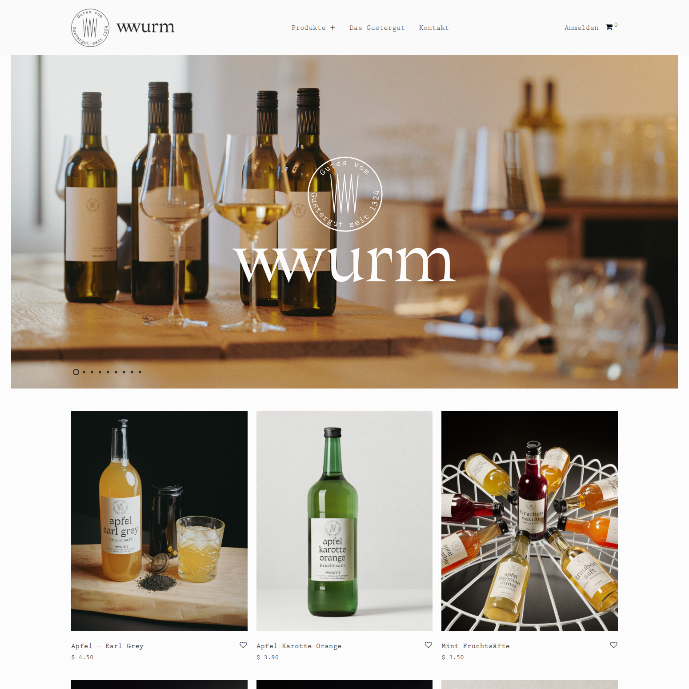
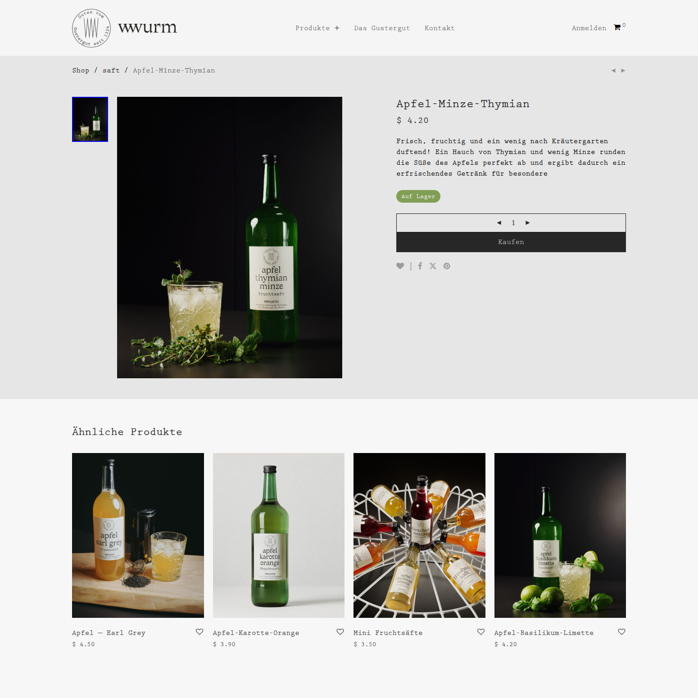
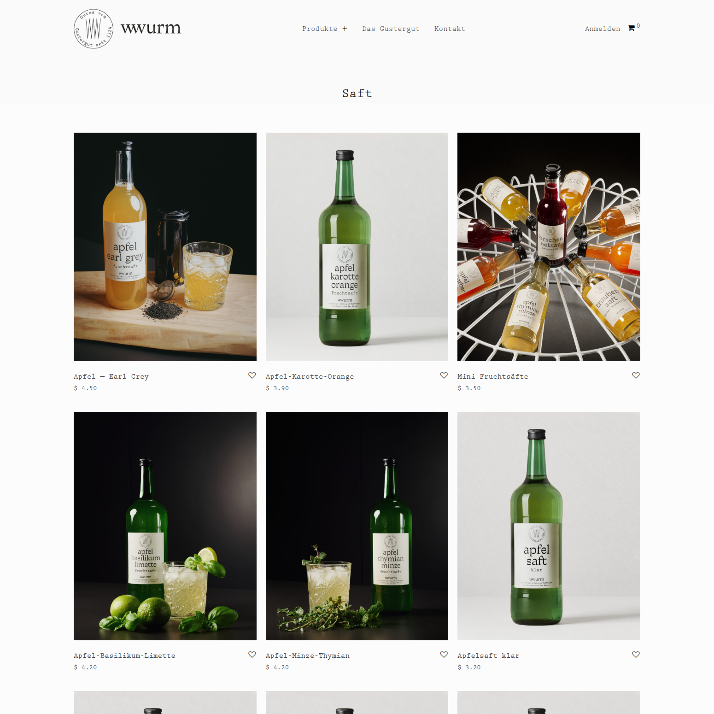
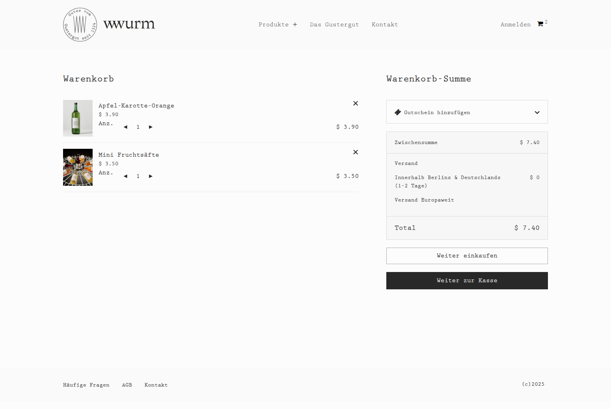
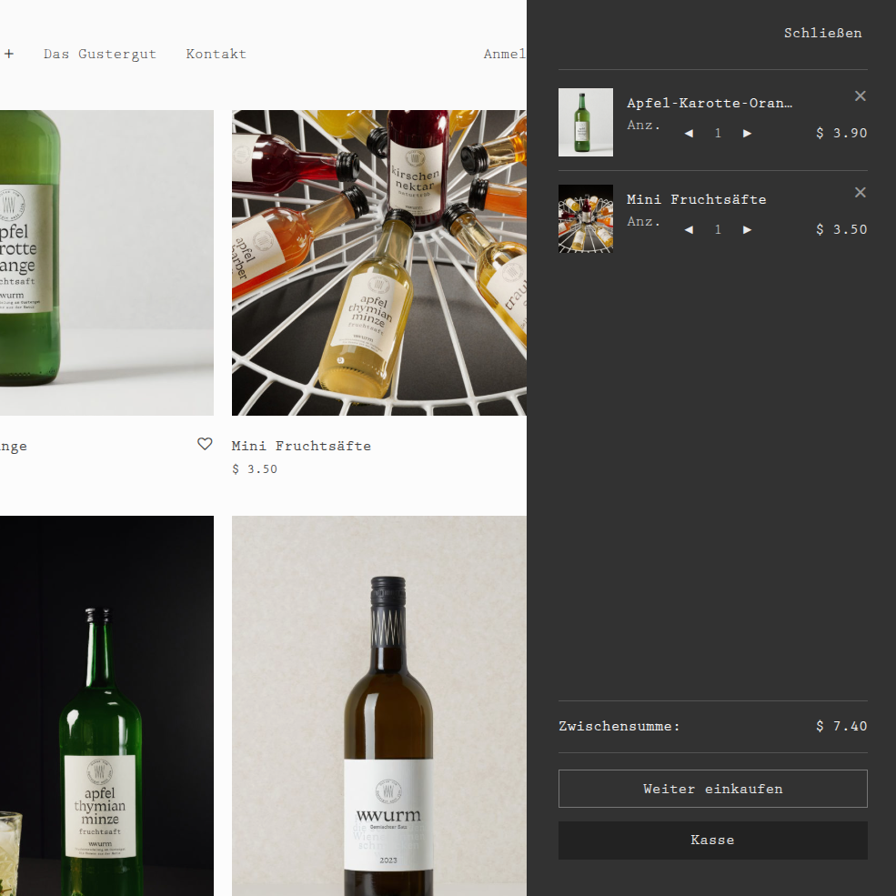
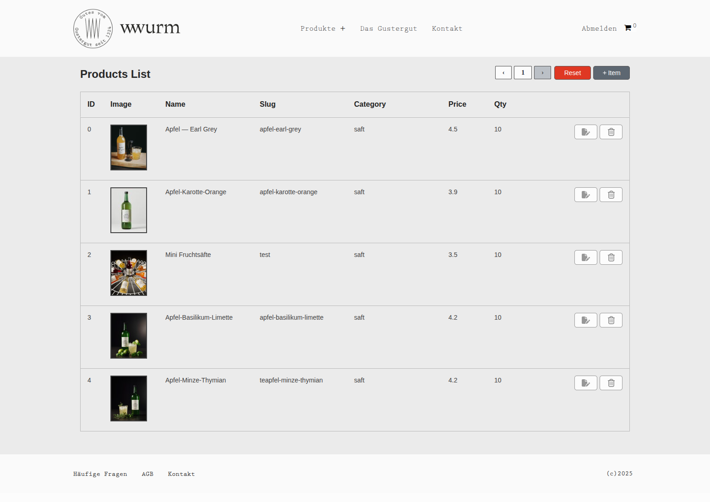
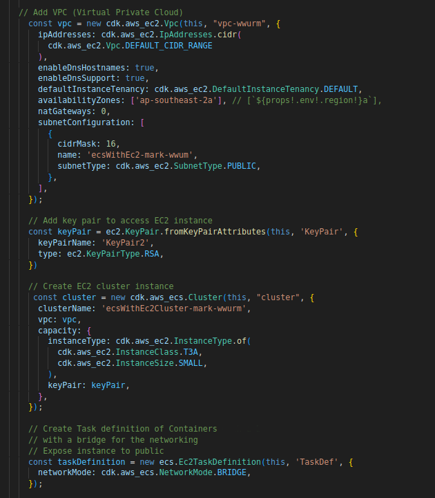
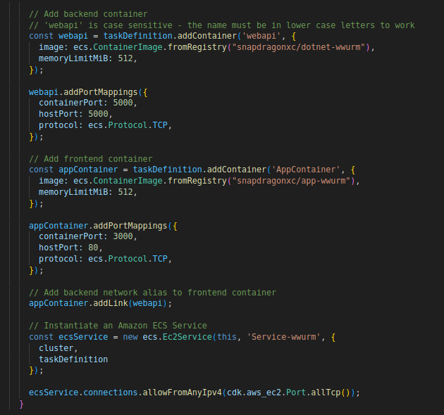

<div class="page">
    <article role="article" class="post">
        <header class="post-header">
            <div class="post-header__meta">           
                <h1 class="post-header__title">Winery Ecommerce App</h1>
                <p class="post-header__subtitle">React | .NET and AWS.</p>
            </div>
        </header>
        <div class="post-content">
            <p>This section contains a detailed description of some of my recent work in .NET, React and DevOps.</p>
                
            <p>The Winery App is a Nextjs/.NET replacement for the "savoy" 
                Wordpress app built by Nordicmade for the company "wwurm winery" in Austria. My demonstration website is at: 
            </p>  
            <a href="http://dodo-tek.com" class="wwurm__anchor" target="_blank" rel="noopener noreferrer">[ http://dodo-tek.com ]</a>
            <p>The company 'Nordicmade' is a small consultancy of WordPress and WooCommerce developers based in Oslo, Norway. They have a reputation of creating beautiful, quality, minimalist, 
                easy-to-use themes that help people on their e-commerce journey:
            </p>    
            <a href="https://www.nordicmade.com/" class="wwurm__anchor" target="_blank" rel="noopener noreferrer">[ https://www.nordicmade.com ]</a>
            <p>The Frontend is pretty standard, with a carousel, lazy product loading, shopping cart and product page. All of these features have been well documented in the past and it
                is like a default standard in Ecommerce. They are an established design. 
            </p>
            <p>Although Nextjs can run entirely on its own, this app separates it into backend code and frontend to allow for the possibility of 
                independent frontend and backend scaling if necessary. For the backend, .NET was chosen. Current research indicates that .NET 
                consistently outperforms Nodejs in speed tests, google, for example: 
            </p>
            <a href="https://www.youtube.com/watch?v=iFbpaRjRpOc" class="wwurm__anchor" target="_blank" rel="noopener noreferrer">[ PhanxDEV: I Compared ASP.NET Core and Node.js for Performance ]</a>
            
            <p>The app runs on an AWS container service (ECS). This was chosen instead of Kubernetes due to the lower cost and 
                ease with which a demonstration setup could be configured with ECS. It is deployed with infra-structure as a code (CDK). 
                The CDK code used to deploy the .NET and Nextjs is at: 
            </p>      
            <a href="https://github.com/mckenzie-mm/ecs-nordic-cdk" class="wwurm__anchor" target="_blank" rel="noopener noreferrer">[ https://github.com/mckenzie-mm/ecs-nordic-cdk ]</a>
        
            
            <strong class="wwurm__caption">Figure 1. Front page containing a carousel and lazy loading of products.</strong>
   
            
            <strong class="wwurm__caption">Figure 2. Product page showing add to cart functionality and similar products.</strong>

            
            <strong class="wwurm__caption">Figure 3. Products page listing, filtered based on category.</strong>

            
            <strong class="wwurm__caption">Figure 4. Shopping cart page.</strong>

            
            <strong class="wwurm__caption">Figure 5. Slide out shopping cart, activated from main menu.</strong>

            
            <strong class="wwurm__caption">Figure 6. Admin table for editing, adding and deleting products from the database.</strong>

            <h2>Frontend: Nextjs + React</h2>
            <p>The Nextjs front end code is at:</p>
            <a href="https://github.com/mckenzie-mm/nordic-frontend" class="wwurm__anchor" target="_blank" rel="noopener noreferrer">[ https://github.com/mckenzie-mm/nordic-frontend ]</a>

            <p>Nextjs was chosen ahead of a pure React front end due to the superior user experience of server side rendered pages 
            over pure single page apps. The downside of Nextjs is the increased code complexity and the risk of accidently exposing 
            sensitive data. For example, state management is challenging. It can not work across server side rendered pages. As a workaround, 
            the cart in this app uses localstorage. This is a copy of Steve Griffith's javascript 
            cart:</p> 
            
            <a href="https://www.youtube.com/watch?v=oXtCOiG-7_A" class="wwurm__anchor" target="_blank" rel="noopener noreferrer">[ Steve Griffith: local storage Shopping cart ]</a>
            
            <p>In practice, both React and Nextjs Code, can be put in an unstable state through code error. The Cloudflare outage in September 2025 was 
            caused by a coding error in a React useEffect hook, causing it to loop and fire a flood of redundant API calls. This 
            affected roughly 20% to 28% of global internet traffic, bringing down major sites like X (Twitter), ChatGPT, Spotify, and Canva.
            </p>
           
            <h2>Backend: .NET(Webapi)</h2>
            <p>The dotnet backend is at:</p> 
            <a href="https://github.com/mckenzie-mm/nordic-api" class="wwurm__anchor" target="_blank" rel="noopener noreferrer">[ https://github.com/mckenzie-mm/nordic-api ]</a>
            <p>The code was built on a linux laptop using the .NET cli with ASP.NET controller-based Web API. The database is an 
                Sqlite database. This was chosen in place of a SqlServer database due it's small size, which would otherwise 
                have required an additional EC2 instance. Also, the low data size (< 1000) associated with these particular web apps did 
                not warrant a more elaborate database. I intend to replace it with Postgres at a later date. You can read about the pros/cons of the different types of databases at:
            </p>
            <a href="https://mccue.dev/pages/8-16-24-just-use-postgres" class="wwurm__anchor" target="_blank" rel="noopener noreferrer">[ Ethan McCue: Just use Postgres ]</a>
            <p>The .NET nuget package, "Dapper", was used for making the SQL queries (my personal preference over Entity Framework). 
                The DTO was coded manually (again my personal preference over AutoMapper).
            </p>
            <h2>Dev Ops: AWS(CDK)</h2>
            <p>The app is deployed using Cloud Development Kit (CDK), infra-structure as code from AWS. The ECS runs both the Nextjs and dotnet apps (docker containers) on the same task using an EC2 cluster. The task uses a 
                bridge network for communicating between the containers. A code extract of the CDK is shown below.</p>
            
            
            <strong class="wwurm__caption">Figure 7. infra-structure as a code with AWS CDK</strong>

        </div>
    </article>
</div>
